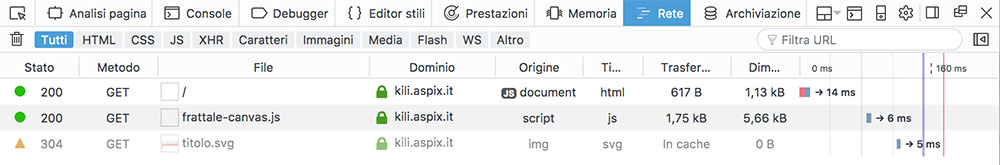

La maggior parte dei browser ha degli strumenti per ispezionare la richiesta e la risposta http, qui vedremo quelli di Firefox accessibili dal menu "/sviluppo/attiva strumenti".
In particolare a noi interessa la scheda "Rete" nella quale sono accessibili molte informazioni che riguardano la comunicazione.
Quella qui sopra è la richiesta di una singola pagina che origina poi altre due ulteriori richieste, il primo numero sulla sinistra è il codice di risposta fornito dal server per ogni richiesta.
facendo click su una singola richiesta si apre un ulteriore pannello che divide in due l'area delle informazioni e che contiene i dati della richiesta specifica. Sulla destra c'è un pulsante "Header non elaborati (raw)" che mostra gli header così come sono stati inviati/ricevuti.
Le informazioni contenute nella prima riga della richiesta e della risposta (più alcune aggiuntive) sono mostrate nella parte alta del pannello.